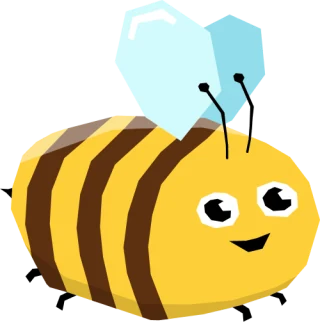

Egyszer rajzolt háttér-jelenetek 2D játékokhoz, és mozgó pöttyök a vonalakon.
Kinek: 2075, városi döntések · hatter2d/varos.js · a két kép ugyanabból az elrendezésből készül
Kinek: Hűtő-mester 2D, receptes és maradékmentő játékok · hatter2d/konyha.js
Kinek: beporzós, komposztos, kerti játékok · hatter2d/kert.js
Menük, kalauz-oldalak, 2D táblák háttere · hatter2d/mehsejt.js · vászonra vagy CSS-háttérnek
Vászon (kitöltött sejtekkel)
CSS-háttér (vászon nélkül)
Beporzó a kapcsolaton, víz a csőben, áram a vezetéken · js/aramlas.js (DS_FLOW)
SVG: DS_FLOW.along(path, { color:'honey' | 'sky' | 'ember', both:true })
A pontok-összekötése mechanika flow:true beállítással – húzz új kapcsolatot!
Vászon: DS_FLOW.canvas(ctx, pontok, { auto:true, before:rajzolj }) – a játék saját képkocka-ciklusából f.draw()